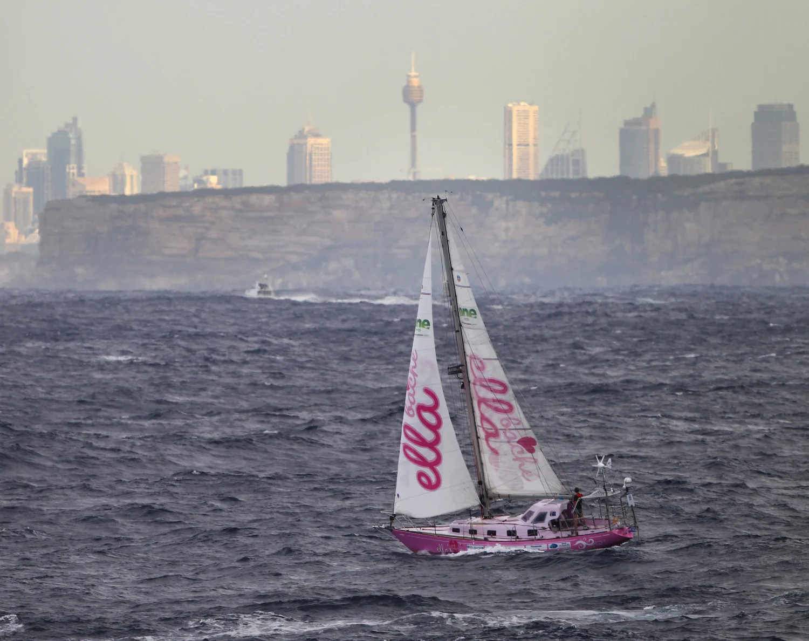
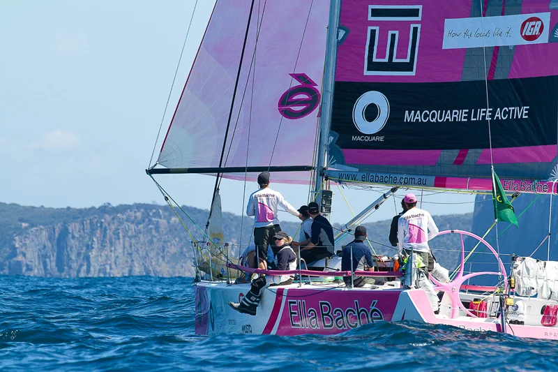
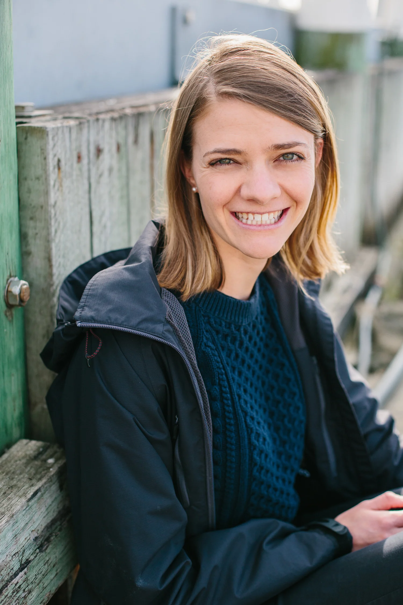

-

Jessica Watson (OAM) navigated some of the world’s most remote oceans and survived seven knockdowns and 210 days alone at sea to become the youngest person to sail solo, nonstop around the world, aged 16. Upon completing the voyage, Jessica was met by the then Prime Minister who declared her an Australian hero. In a simple speech that won admiration across Australia and around the world, she responded to the Prime Minister by announcing that she disagreed with him, that she didn’t consider herself a hero—just an ‘ordinary person, who had a dream, worked hard at it and proved that anything really is possible’.
-

Overcoming early struggles with dyslexia, Jessica became a storyteller, firstly on her popular blog and then in her bestselling, internationally published book True Spirit. The documentary she filmed while at sea was narrated by Sir Richard Branson and a film adaption of Jessica’s story was released on Netflix in February 2023.
Jessica was named Young Australian of the Year in 2011 and has gone on to lead various projects, including a team that became the youngest ever to compete in Australia’s notorious Sydney to Hobart yacht race. The project saw the youth crew finish second in their division, and Jessica was awarded the Jane Tate trophy for the first female skipper. -

Photo: Kate DyerJessica’s role as a Youth Representative for the United Nations World Food Programme took her to remote Laos and refugee camps in Jordan and Lebanon. Now aged 31, Jessica was a founding member of marine start-up Deckee.com, has completed an MBA, authored a second book - a middle-grade novel titled Indigo Blue, and is an in-demand corporate speaker.
Day-to-day, Jessica is a management consultant in Deloitte’s Human Capital consulting team with expertise in technology adoption for large-scale transformations and team performance. Jessica co-authored a Deloitte Insights Report - Building the peloton: High-performance team-building in the future of work.